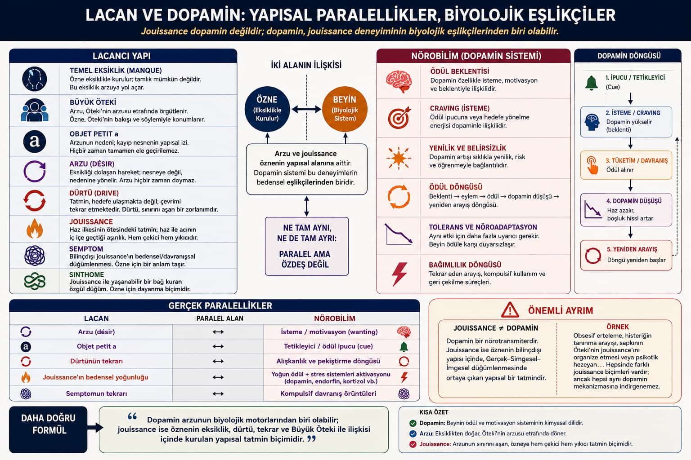

Parallel, not identical
Lacan and dopamine
The chart’s warning is the thesis: jouissance is not dopamine. Dopamine may be one biological companion of wanting and learning. Jouissance is a structural enjoyment knotted through lack, the Other, and repetition.
Two languages, one subject
On the left, Lacanian structure: lack, Big Other, objet petit a, desire, drive, jouissance, symptom, sinthome. In the middle, a double arrow between subject and brain: desire and jouissance belong to the subject’s structure; the dopamine system can accompany the body of those experiences. On the right, neurobiology: cue, craving, action, dip, search again.

Mapped parallels (and their limit)
| Lacan | A possible neuro parallel | Do not collapse into |
|---|---|---|
| Desire | Wanting / motivation | A chemical that “is” desire |
| Objet petit a | Cue / reward predictor | The object as a mere stimulus |
| Drive’s repetition | Habit and seeking loops | A rat in a box as the whole subject |
| Bodily intensity of jouissance | Stress and reward chemistry | Jouissance = dopamine spike |
| Symptom’s repetition | Compulsive patterns | One mechanism for every structure |
Obsessive delay, hysteric search for recognition, perverse staging, psychotic certainty: all involve jouissance, and none reduce to one transmitter. The chart’s better formula: dopamine can be a motor of desire; jouissance is the structural enjoyment built from lack, drive, repetition, and the Other.
Return to jouissance and desire and drive.